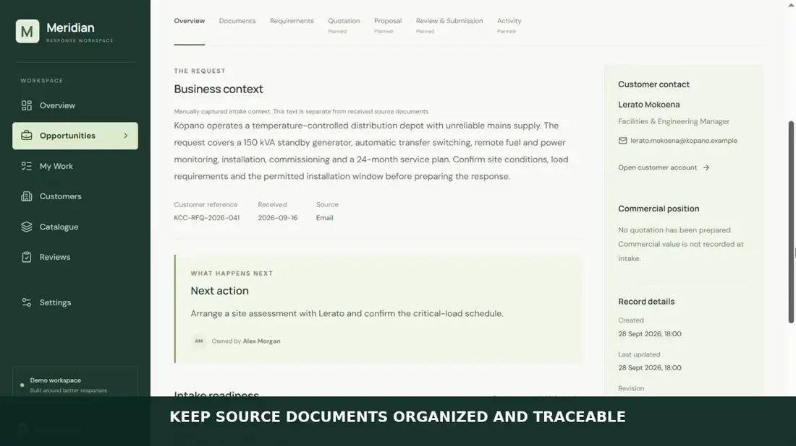
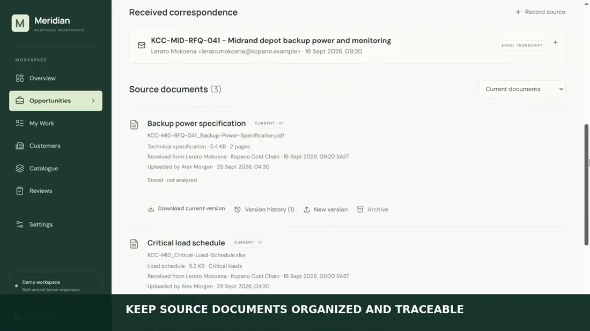
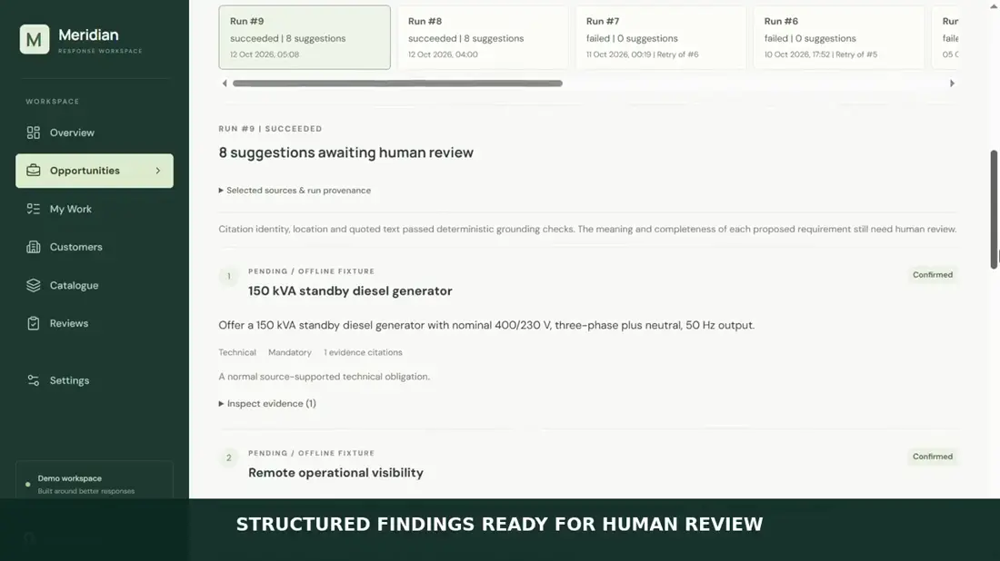
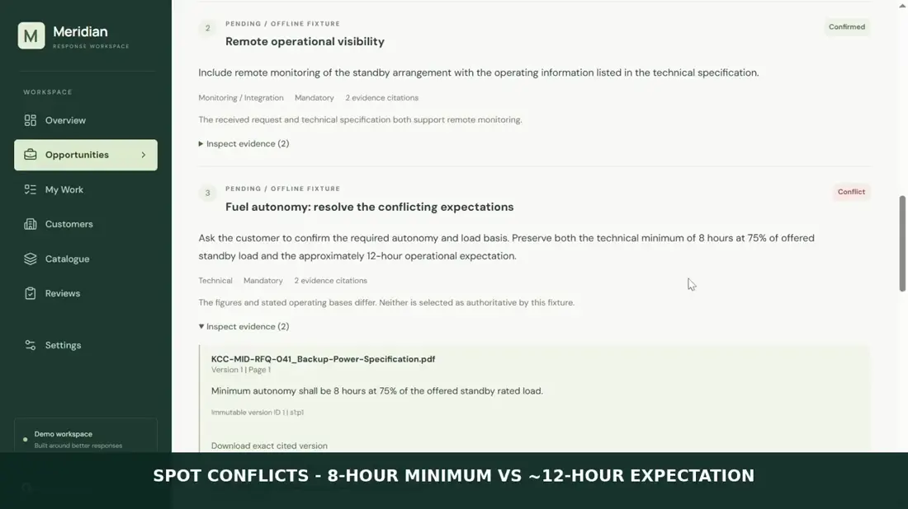

Retain exact source versions
Each run selects immutable evidence versions from one opportunity. The backend constructs bounded segments with run-local source keys, version identity and content hashes.
I developed Meridian around a problem I wanted to make visible: a proposed requirement should be traceable to the exact email, PDF page or spreadsheet cell that supports it. Source evidence, proposed interpretations and accepted business records must remain distinct.
Emails, PDFs and spreadsheets can contain competing expectations. An analysis tool can invent citations, combine distant passages or confuse its own suggestions with approved requirements.
I organised evidence by opportunity and immutable source version, then built a review screen that links pending suggestions to their exact source locations.
The walkthrough shows opportunities, source documents, requirements and evidence-linked suggestions. The analysis shown is an offline deterministic fixture demonstration, not live model inference.
Watch the longer application walkthrough (3 min 50 sec) ↗




Each run selects immutable evidence versions from one opportunity. The backend constructs bounded segments with run-local source keys, version identity and content hashes.
The grounding layer checks source ownership, exact page or cell ranges, ordered segment IDs and whether the quoted excerpt actually appears in the selected segments.
The final demonstration uses eight deterministic offline fixture suggestions. The live cloud experiment did not pass output and citation acceptance, so I do not present it as validated live inference.
The FastAPI backend enforces permission and document boundaries. Pending suggestions remain separate from manually maintained requirements; direct AI-suggestion acceptance is not implemented.
Implementation: Python · FastAPI · SQLAlchemy · Alembic · React · TypeScript · Evidence segmentation · Ollama adapter · Offline fixtures
Citations are checked against exact source versions and ordered segments; nonexistent segments and mismatched excerpts are rejected in the backend.
The offline fixture demonstrates source selection, grounding and pending suggestion inspection. It does not automatically create or approve authoritative requirements.
I tested integration paths, including a cloud provider attempt, but its final acceptance failed. This portfolio shows the completed offline workflow, not proven model accuracy.
I needed to make AI output inspectable without letting it rewrite trusted records. I put source-version checks and excerpt matching in deterministic application code and retained a separate manual requirements workflow.
Before offering live AI analysis, I would test new unseen documents, measure false and missed findings, correct the provider output contract and validate semantic claims with human reviewers. Source-backed citations alone cannot prove a finding is correct.
The implementation is maintained privately by Ndlovu Business Technologies. The portfolio presents the engineering work without distributing the proprietary source.